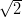

On the visualisation of detrital age distributionsPieter VermeeschBirkbeck, University of London Malet Street, London WC1E 7HX +44 (0)20 7679 2418 p.vermeesch [at] ucl.ac.uk _____________________________________________________ Abstract Since the development of SIMS and LA-ICP-MS technology in the 1980s and 1990s, single grain U-Pb dating of detrital zircon has quickly become the most popular technique for sedimentary provenance studies. Currently by far the most widespread method for visualising detrital age distributions is the so-called Probability Density Plot (PDP), which is calculated by summing a number of Gaussian distributions whose means and standard deviations correspond to the individual ages and their respective analytical uncertainties. Unfortunately, the PDP lacks a firm theoretical basis and can produce counter-intuitive results when data quantity (number of analyses) and/or quality (precision) is high. As a more robust alternative to the PDP, this paper proposes a standard statistical technique called Kernel Density Estimation (KDE), which also involves summing a set of Gaussian distributions, but does not explicitly take into account the analytical uncertainties. The Java-based DensityPlotter program (http://densityplotter.london-geochron.com) was developed with the aim to facilitate the adoption of KDE plots in the context of detrital geochronology. ____________________________________________________________ 1. IntroductionZircon (ZrSiO4) is a common accessory mineral in acidic igneous rocks, which
form the main proto-sources of the siliciclastic sediments. It contains up to a
percent of radioactive U and Th, which decay to various isotopes of lead with
known half lives, forming the basis of the U-Th-Pb geochronometer. Zircon is
a very durable mineral that undergoes minimal chemical alteration or
mechanical abrasion. Therefore, zircon crystals can be considered time capsules
carrying the igneous and metamorphic history of their proto-sources.
The probability distribution of a representative sample of zircon U-Pb
ages from a detrital population can serve as a characteristic fingerprint
that may be used to trace the flow of sand through sediment routing
systems. As a provenance tracer, zircon U-Pb data are less susceptible to
winnowing effects than conventional petrographic techniques (Garzanti
et al., 2009). Using modern microprobe technology, it is quite easy to date, say,
a hundred grains of zircon in a matter of just a few hours. Due to the
robustness of zircons as a tracer of sedimentary provenance, and the relative
ease of dating them, the use of detrital zircon U-Pb geochronology has
truly exploded in recent years. A literature survey using the keywords
‘detrital’, ‘zircon’, and ‘provenance’ indicates that the proliferation of detrital
zircon studies has followed an exponential trend, with the number of
publications doubling roughly every five years over the past two decades. At
present, nearly a thousand detrital zircon publications appear each year.
To address the technical and methodological issues arising from the increased popularity of the technique, a detrital zircon geochronology workshop was held immediately prior to the 2011 Goldschmidt conference in Prague. During this workshop, a concensus was reached that the statistical tools used by the community to analyse the vast amounts of U-Pb data produced by today’s SIMS and LA-ICP-MS laboratories are inadequate. Particularly the use of so-called Probability Density Plots (PDPs), which are ubiquitous in the detrital zircon geochronology literature, was identified as a cause for concern. It was noted that, in spite of its name, the PDP lacks any theoretical basis as a probability density estimator, although some maintained that it may still serve a purpose as a data visualisation tool. Galbraith (1998, 2010) eloquently pointed out some problems with the PDP in the context of fission track and luminescence dating, but unfortunately this work was published in specialised journals and has not been picked up by the detrital zircon U-Pb dating community. Furthermore, Galbraith (1990)’s alternative for the PDP, the so-called radial plot, is not ideally suited for displaying large datasets of relatively precise zircon U-Pb ages. This paper proposes the Kernel Density Estimator (KDE), which has a similar appearance as the PDP, but is built on solid theoretical foundations, as a statistically more robust alternative to the PDP (Section 2). In order to aid in the adoption of this method by the detrital zircon U-Pb dating community, a Java-based data visualisation tool called DensityPlotter was developed for plotting detrital age distributions (Section 3).
2. KDE vs. PDPFigure 1: (a) The ‘Kernel Density Estimator’ (KDE) is a function that
stacks a Gaussian ‘bell curve’ on top of each measurement, whose standard
deviation is determined by the local probability density. (b) The ‘Probability
Density Plot’ (PDP) is a function that stacks a Gaussian ‘bell curve’ on top of
each measurement whose standard deviation is determined by the analytical
precision.
In contrast with the geochronology of igneous and metamorphic rocks, in which one seeks to date an individual geological event, detrital studies generally aim to characterise an entire population of ages by means of a large number of single grain analyses. In statistical terms, the goal of such studies is to estimate the so-called Probability Density Function (PDF), which gives the relative likelihood of the different ages in the population. By definition, the probability for a randomly selected grain to fall within a given range is then given by the integral of the PDF over this range:
2.1. Kernel Density EstimationA large body of statistical literature has been written on the subject of probability density estimation (e.g., Silverman, 1986; Devroye, 1987). The most widely used tools are the traditional histogram, which is discrete and discontinuous, and the Kernel Density Estimator (KDE), which is a smooth and continuous alternative (Silverman, 1986). A KDE is produced by arranging the measurements along a line and stacking a so-called ‘kernel’ (i.e., a box, triangle, Gaussian, etc.) of a certain width (the ‘bandwidth’) on top of each of them (Figure 1.a). Given a set of n measurements xi (i=1→n), the kernel density estimator can be written as follows:
where K(⋅) is the ‘kernel’ and h is the ‘bandwidth’. Some popular choices for the kernel are (Silverman, 1986):
It turns out that the choice of kernel is not important (other than in determining the smoothness characteristics of the density estimate), but the bandwidth is. Picking the wrong bandwidth may lead to density estimates that are either over- or undersmoothed (Figure 2). The bandwidth can either be constant (‘kernel density estimation’), or vary according to the local density (‘adaptive kernel density estimation’). If the distribution is unimodal and smooth, the optimal bandwidth may be calculated analytically (Silverman, 1986):
where σ is the standard deviation of the data set. Most detrital age distributions, however, are not smooth or unimodal, and Equation 6 is therefore rarely appropriate, yielding oversmoothed density estimates. Adaptive kernel density estimates vary the bandwidth according to the local density. This means that in areas where data density is sparse, a large bandwidth is used, and the density estimate is smooth. But where lots of data are available, a narrower bandwidth is used, allowing the KDE to provide a high resolution estimate in those parts of the distribution. A large number of methods are available for the selection of the adaptive bandwidth. These include ‘balloon estimators’ (Loftsgaarden and Quesenberry, 1965), in which the bandwidth is made proportional to the density at the evaluation point (‘x’ in Equation 2), and ‘sample-point estimators’ (Breiman et al., 1977), which vary the bandwidth based on the data points (‘xi’ in Equation 2).
Figure 2: The Normal distribution is just one of many possible ‘kernels’. The
three columns of this figure show that the choice of kernel has a relatively
minor effect on the shape of the KDE of 145 concordant detrital zircon U-Pb
ages from Hong Kong. The bandwidth h is far more important than the choice
of kernel. The KDEs on the middle row use the optimal bandwidth calculated
according to Botev et al. (2010). Choosing a different bandwidth can lead to
estimates that are either oversmoothed (top row) or undersmoothed (bottom
row).
2.2. Probability Density PlotsKDEs are commonly used in many branches of Science, but not in the context of detrital geochronology. Instead, a similar-looking, but fundamentally different tool named ‘Probability Density Plot’ (PDP, Ludwig, 2003, also called Probability Density Distribution by Sircombe, 2004), has gained significant popularity. The PDP was first proposed by Hurford et al. (1984), in an attempt to account for the variable analytical precision (a.k.a. ‘heteroscedasticity’) of (detrital fission track) data. Just like the KDE, the PDP is also produced by stacking a Normal distribution on top of each measurement whose bandwidth, however, is not determined by the density, but by the analytical precision (Figure 1.b), so as to reduce the importance of imprecise measurements and to emphasize the precise measurements. Although this may seem like a sensible strategy at first glance, it may actually degrade results in certain situations, as illustrated with the following two synthetic examples.
Although cumulative distributions are an easy and effective way to circumvent the double-smoothing problem (Vermeesch, 2007), probability density estimates are often easier to visually interpret and are therefore preferred by many workers. This paper proposes that the KDE be used for this purpose instead of the PDP (or variants thereof, such as those proposed by Brandon, 1996). Part of the reason why PDPs have become so popular is that they have been implemented in user-friendly software packages such as Isoplot (Ludwig, 2003) and AgeDisplay (Sircombe, 2004). To aid in the adoption of the KDE by the geochronological community, a Java-based data visualisation tool called DensityPlotter was developed.
Figure 3: Illustration of two problems with PDPs. The first row of this
figure shows how the PDP (black curves) breaks down when data quality
(i.e., analytical precision) is high. Left (a): a synthetic example of a
bimodal probability density function (PDF, green) of ‘true ages’, i.e. the
age distribution which one would observe by measuring an infinite number
of randomly sampled zircon U-Pb ages with infinite precision. Middle (b):
the KDE of a sample of 117 randomly selected measurements from this
distribution is an unbiased estimator of the PDF. Right (c): the PDP of
the same measurements is a nonsensical set of discrete spikes. The bottom
row of the figure makes the point that the PDP is biased when data
quantity (i.e., sample size) is high. Left (d): the probability distribution
of the measurements with finite analytical precision (blue) is a smoothed
version of the PDF of the ‘true ages’ shown in (a). In this example, the
extent of the smoothing is greater for the second mode, due to the lower
analytical precision of the latter. Middle (e): the KDE converges to the
true measurement distribution with increasing sample size n. Right (f):
The PDP is a biased estimator of the measurement distribution because it
‘double-smooths’ the imprecise measurements. Bias is therefore worst for the
second mode.
3. DensityPlotterDensityPlotter is a computer program developed with the aim to facilitate the adoption of the KDE by the geochronological community. It is based on RadialPlotter which, as the name suggests, implements Rex Galbraith’s radial plots for the fission track and luminescence communities (Vermeesch, 2009). Both RadialPlotter and DensityPlotter were programmed in Java and are therefore perfectly platform independent. DensityPlotter can be downloaded from http://densityplotter.london-geochron.com. To calculate the optimal KDE bandwidth, the program implements an algorithm based on the diffusion equation, which can be shown to be both fast and accurate (Botev et al., 2010). In addition to KDEs (and radial plots), DensityPlotter also provides functionality to plot histograms and PDPs, as well as basic mixture models (Sambridge and Compston, 1994; Galbraith and Green, 1990). Data can be copied and pasted to-and-from Microsoft Excel and saved in a simple comma-separated variable (.csv) format. An example of such an input file is provided on the website. The graphical output can be saved either as bitmap or vector images, in a .png or .pdf format, respectively. Although DensityPlotter was designed to produce publication-ready figures and includes many options to customise the look and feel of the density estimates, the pdf file can also be further edited in vector-graphics applications such as Illustrator, CorelDRAW, or Inkscape. Because the analytical precision of many geochronological datasets is proportional to the age, the relative errors generally show less grain-to-grain variability than the absolute errors. To take advantage of this, DensityPlotter includes an option to log-transform the data (Brandon, 1996). The algorithm used for the mixture modelling is a hybrid one using both deterministic parts (taken from Galbraith and Green, 1990) and Markov Chain Monte Carlo (MCMC) ingredients to maximise robustness and reproducibility. The reader is referred to the Help pages for further implementation details about the program. For access to the source code, see the website.
4. A concluding exampleThis paper showed that the PDP lacks the firm theoretical basis of the KDE. The
former produces noisy results when applied to high precision data, and yields
oversmoothed density estimates when analytical precision is low and/or sample
size is large. The question then arises why the PDP has become so popular in
geochronology in the first place. To answer this question, consider the dataset of
zircon U-Pb ages from a Mesozoic sandstone from Hong Kong shown in Figure 4
and posted on the DensityPlotter website. Figure 4.a shows the density
estimates of the full dataset of 145 concordant U-Pb ages, while Figure
4.b shows a subset of 35 randomly selected ages from the same sample.
The KDE (blue, filled) of the full dataset looks similar to that of the
subsample, featuring a first major peak at ~1000 Ma and a second mode
at ~2500 Ma. The PDPs (black, empty) of the two datasets, however,
have quite a different appearance. Although the PDP of the full dataset
is undeniably undersmoothed in comparison with the KDE, it does a
decent job at capturing both of the major peaks, as well as most of the
smaller scale features. The PDP of the subsample, however, has broken
down into an assemblage of spikes bearing little or no resemblance to the
KDE. This PDP may still serve a purpose as a way to visualise the data.
Unfortunately PDPs are seldom used in this way. Because of their very name,
they are erroneously used and interpreted as estimators of probability
density.
Figure 4: KDE (blue shaded area), PDP (black line), and histogram (light
grey rectangles) of (a) the entire Hong Kong dataset of Figure 2 and (b) a
random subset of 35 ages from the same sample. In both cases, the PDP
suffers from undersmoothing. Both KDEs adequately capture the bimodality
of the distribution, and so does the PDP of the full dataset. The PDP of the
subset, however, breaks down into a number of spikes marking the individual
age measurements, while obscuring the underlying probability distribution.
In order for a PDP to match the corresponding KDE and be useful as a probability density estimator, the analytical precision of the ages would have to equal the bandwidth of the KDE. For this to happen, the underlying age distribution would have to be made of a number of peaks which are slightly wider than the (2σ) measurement errors. In statistical terms, the variance of the different age components of the detrital population would have to be twice the variance of the age measurements, so that the observed scatter of the age measurements around the different age components would be overdispersed with respect to the formal analytical precision by a factor of . It appears that this condition is approximately and fortuitously fulfilled by typical U-Pb datasets featuring ~100 ages of 2-5% analytical precision. The ‘reasonable’ appearance of many published PDPs is therefore caused by chance and not by design, and this is the likely explanation for their enduring popularity in the geological literature. Despite the fact that PDPs may be considered ‘good enough’ as a visual aid in many situations, in other cases they may be noninformative at best, and misleading at worst. The KDE is a valid alternative with solid theoretical underpinnings which combines the best features of the PDP (namely a continuous curve that is easy to interpret) without its failings when data quality or quantity are high. It is hoped that DensityPlotter will aid in the adoption of the KDE by the Earth Sciences community, and the user is invited to contact the author with remarks or requests for additional features. AcknowledgmentsThe author wishes to thank Andy Carter for providing the Hong Kong dataset and Rex Galbraith for proofreading the manuscript and expert advice.
References
Botev, Z. I., Grotowski, J. F., Kroese, D. P., 2010. Kernel density estimation via diffusion. Annals of Statistics 38, 2916–2957. Brandon, M., 1996. Probability density plot for fission-track grain-age samples. Radiation Measurements 26 (5), 663 – 676. Breiman, L., Meisel, W., Purcell, E., 1977. Variable kernel estimates of multivariate densities. Technometrics 19 (2), pp. 135–144. Carroll, R. J., Hall, P., 1988. Optimal rates of convergence for deconvolving a density. Journal of the American Statistical Association 83 (404), 1184–1186. Devroye, L., 1987. A course in density estimation. Birkhauser Boston Inc., Cambridge, MA, USA. Galbraith, R., 1998. The trouble with “probability density” plots of fission track ages. Radiation Measurements 29, 125–131. Galbraith, R. F., 1990. The radial plot: graphical assessment of spread in ages. Nuclear Tracks and Radiation Measurements 17, 207–214. Galbraith, R. F., 2010. On plotting OSL equivalent doses. Ancient TL 28, 1–10. Galbraith, R. F., Green, P. F., 1990. Estimating the component ages in a finite mixture. Nuclear Tracks and Radiation Measurements 17, 197–206. Garzanti, E., Andó, S., Vezzoli, G., 2009. Grain-size dependence of sediment composition and environmental bias in provenance studies. Earth and Planetary Science Letters 277, 422–432. Hurford, A., Fitch, F., Clarke, A., 1984. Resolution of the age structure of the detrital zircon populations of two Lower Cretaceous sandstones from the Weald of England by fission track dating. Geological Magazine 121, 269–396. Loftsgaarden, D. O., Quesenberry, C. P., 1965. A Nonparametric Estimate of a Multivariate Density Function. The Annals of Mathematical Statistics 36 (3), 1049–1051. Ludwig, K., 2003. Isoplot 3.00 – a user’s manual. Berkeley Geochronology Center Special Publication. Sambridge, M. S., Compston, W., 1994. Mixture modeling of multi-component data sets with application to ion-probe zircon ages. Earth and Planetary Science Letters 128, 373–390. Silverman, B., 1986. Density Estimation for Statistics and Data Analysis. Chapman and Hall, London. Sircombe, K. N., 2004. AgeDisplay: an EXCEL workbook to evaluate and display univariate geochronological data using binned frequency histograms and probability density distributions. Computers and Geosciences 30, 21–31. Vermeesch, P., 2007. Quantitative geomorphology of the White Mountains (California) using detrital apatite fission track thermochronology. Journal of Geophysical Research (Earth Surface) 112 (F11), 3004. Vermeesch, P., 2009. Radialplotter: A java application for fission track, luminescence and other radial plots. Radiation Measurements 44 (4), 409–410. |
{kind=link}
{kind=link}
{kind=link}
{kind=link}